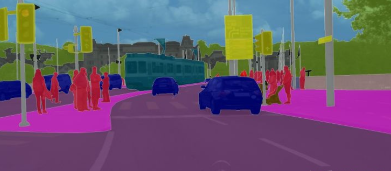
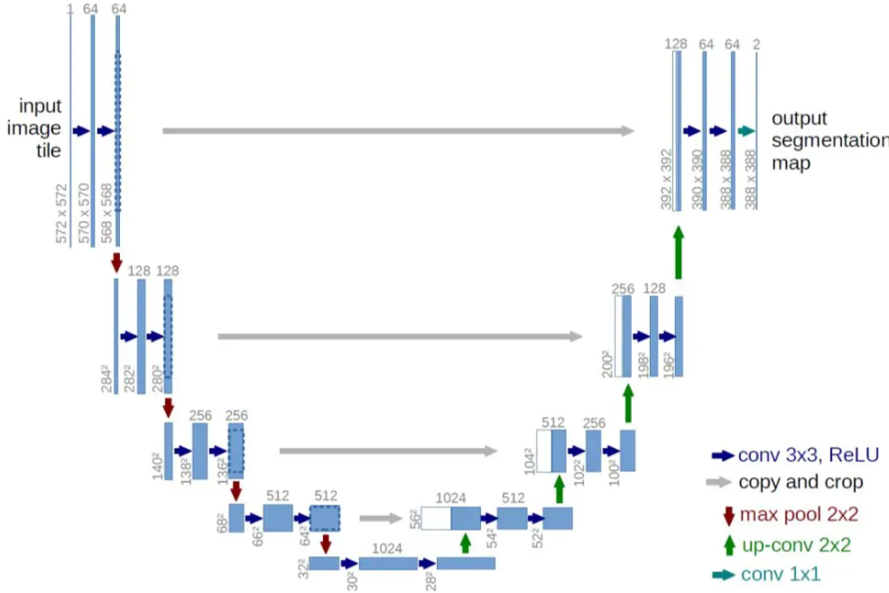
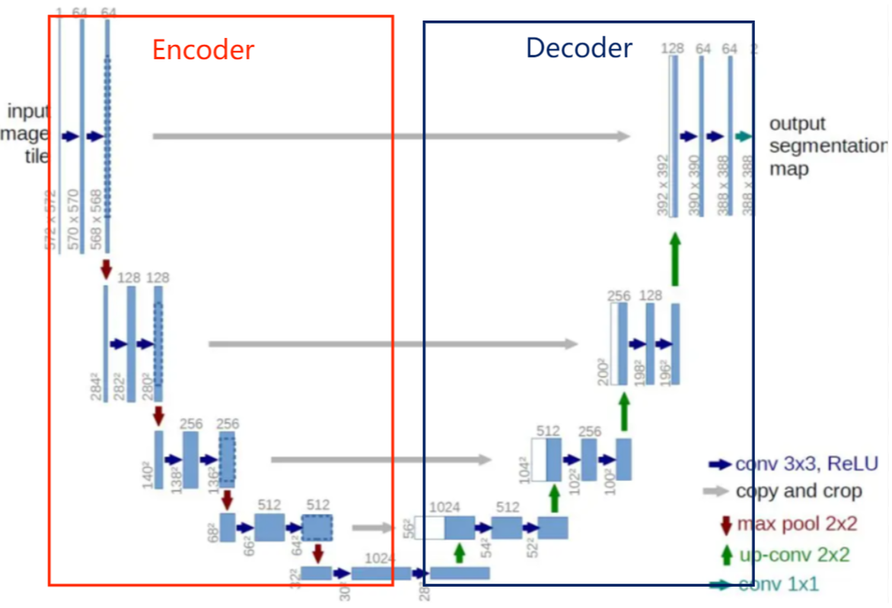

Unet——简单高效的图像处理网络
概述
语义分割(Semantic Segmentation)是图像处理和机器视觉一个重要分支。与分类任务不同，语义分割需要判断图像每个像素点的类别，进行精确分割。语义分割目前在自动驾驶、自动抠图、医疗影像等领域有着比较广泛的应用。

上图就是一个自动驾驶中的移动分割任务的分割结果，可以从一张图片中有效的识别出汽车（深蓝色），行人（红色），红绿灯（黄色），道路（浅紫色）等。
Unet是最常用、最简单的一种分割模型，它简单、高效、易懂、容易构建、可以从小数据集中训练。
网络架构

该结构的基本思想为：
- 先对图像进行卷积和池化，得到尺寸分别为原图$1/2$（图a），$1/4$（图b），$1/8$（图c），$1/16$（图d）的四个特征图
- 对d进行上采样或反卷积，将所得结果与c进行拼接，得到图e
- 对e进行上采样或反卷积，将所得结果与b进行拼接，得到图f
- 对f进行上采样或反卷积，将所得结果与a进行拼接，得到图g
- 最终对g进行上采样或反卷积，得到与输入图像尺寸相同的预测结果
它同样也是个Encoder-Decoder模型。

由于网络的整体结构是一个大些的英文字母U，所以叫做U-net。
优点与思想
浅层卷积关注纹理特征，深层网络关注本质的那种特征，所以深层浅层特征均有各自的意义。但通过反卷积得到的更大的尺寸的特征图的边缘，是缺少信息的，毕竟每一次下采样提炼特征的同时，也必然会损失一些边缘特征，而失去的特征并不能从上采样中找回。因此通过特征的拼接，来实现边缘特征的一个找回。这样兼具了浅层的特征和深层特征信息。
---------------------本文结束---------------------